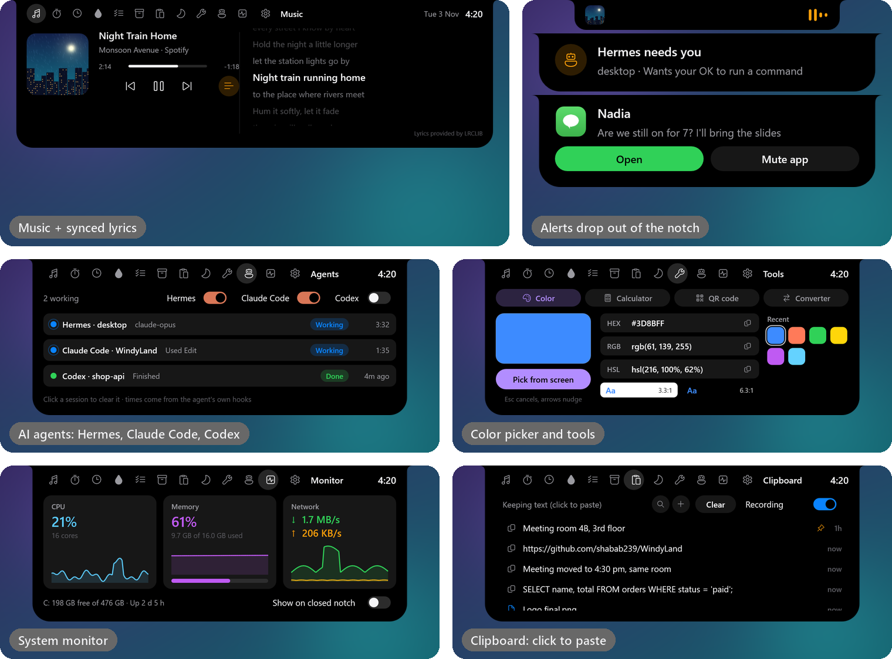
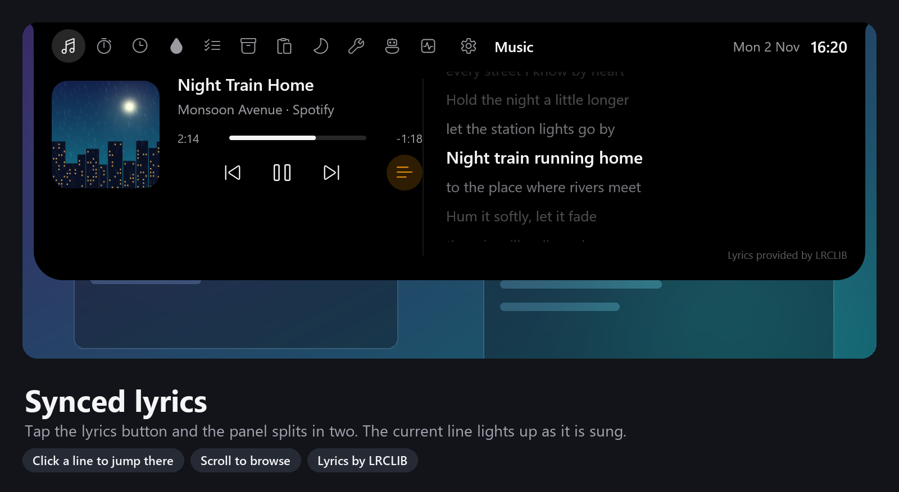
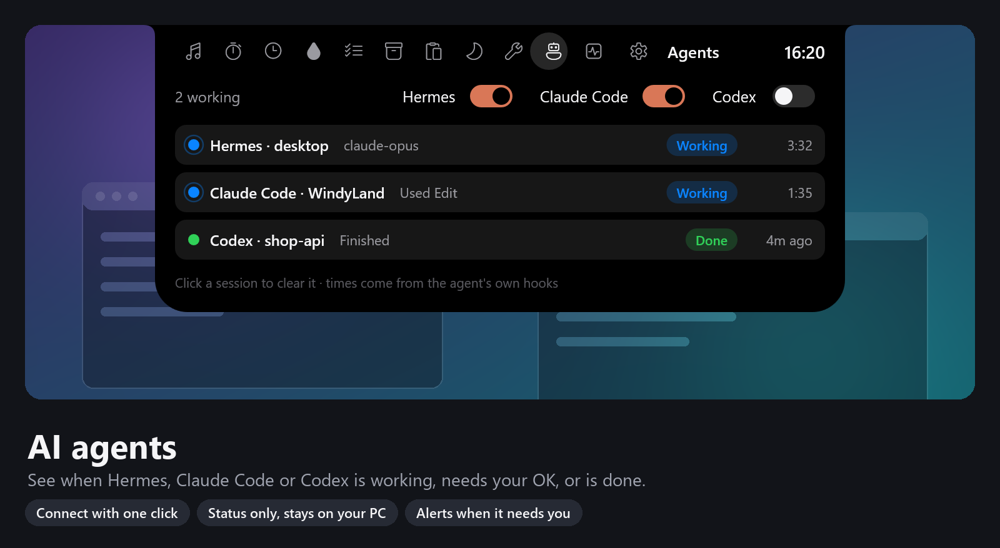
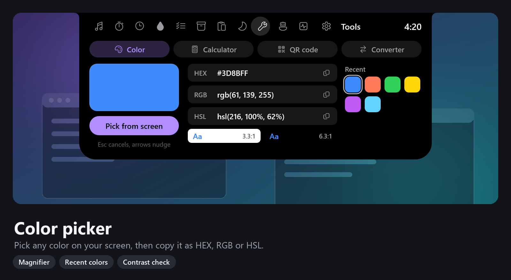
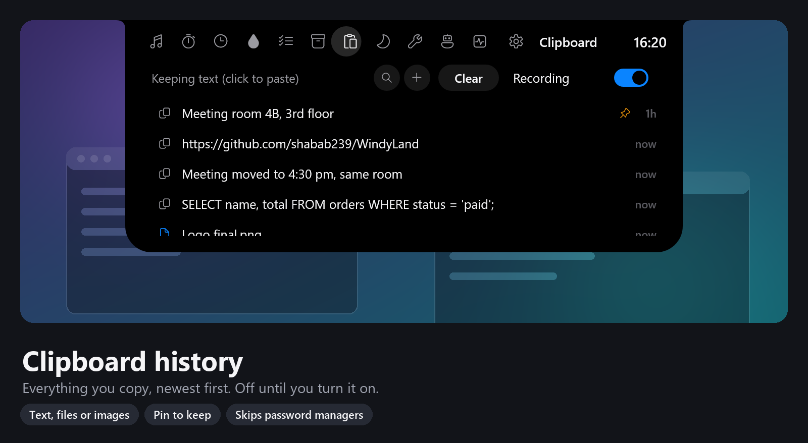
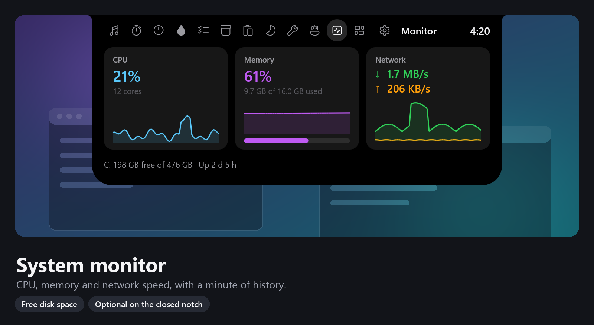
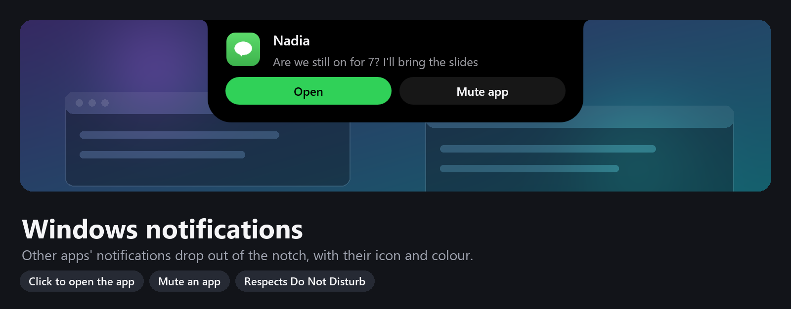
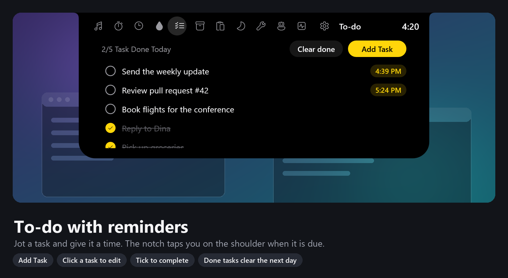
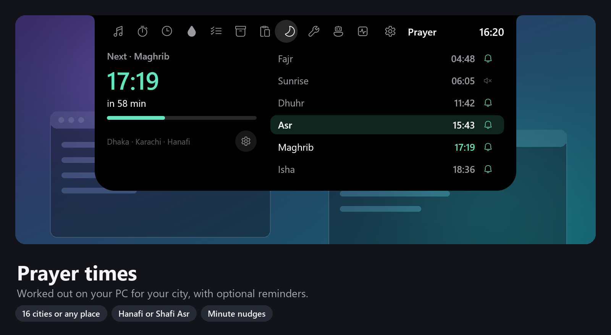

গানের সাথে সাথে লিরিক্স, AI এজেন্টের স্ট্যাটাস, color picker, ক্যালকুলেটর, clipboard history, রিমাইন্ডার আর আরো অনেক কিছু, সবই স্ক্রিনের কিনারায় ছোট্ট একটা notch এ। ফ্রি আর open source।
Windows এর জন্য ডাউনলোড
আগের আপডেটে (0.1.20):
ইনস্টলারটা মাত্র ৩ MB এর মতো। পরের আপডেটগুলো notch থেকেই এক ক্লিকে ইনস্টল হয়।
উপরের বাটনে ক্লিক করুন। ফাইলের নাম WindyLandSetup-<version>.exe।
Windows যদি নীল রঙের Windows protected your PC স্ক্রিন দেখায়, More info চেপে তারপর Run anyway চাপুন।
শুরুতে ছোট একটা welcome tour জিজ্ঞেস করবে কোন স্টাইল আর কোন কিনারায় বসবে। notch এর উপর মাউস রাখলে খোলে, রাইট-ক্লিক করলে সেটিংস।
প্রতিটা প্যানেল অপশনাল: যেটা লাগবে না, লুকিয়ে রাখুন।

Spotify, ব্রাউজার বা যেকোনো প্লেয়ার। গানের যে লাইন চলছে সেটা হাইলাইট হয়।

Hermes, Claude Code বা Codex কাজ করছে, আপনার OK চাইছে, নাকি কাজ শেষ, notch এই দেখা যায়।

স্ক্রিনের যেকোনো জায়গা থেকে color picker, ক্যালকুলেটর, QR code, unit converter (কাঠা, বিঘা, শতাংশ, মণসহ) আর টাইম জোন।

ক্লিক করলেই পেস্ট, সার্চ, পিন আর snippet। আপনি চালু না করা পর্যন্ত বন্ধ থাকে।

CPU, RAM আর নেট স্পিড, শেষ এক মিনিটের গ্রাফসহ।

অন্য অ্যাপের Windows নোটিফিকেশন notch থেকে নেমে আসে, অ্যাপের আইকনসহ।

কাজটা লিখে একটা সময় দিয়ে দিন, সময় হলে notch মনে করিয়ে দেবে।

আপনার শহরের সময় পিসিতেই হিসাব হয়, চাইলে রিমাইন্ডারও পাবেন।
কোনো অ্যাকাউন্ট নেই, কোনো ট্র্যাকিং নেই। প্রাইভেসি পলিসি